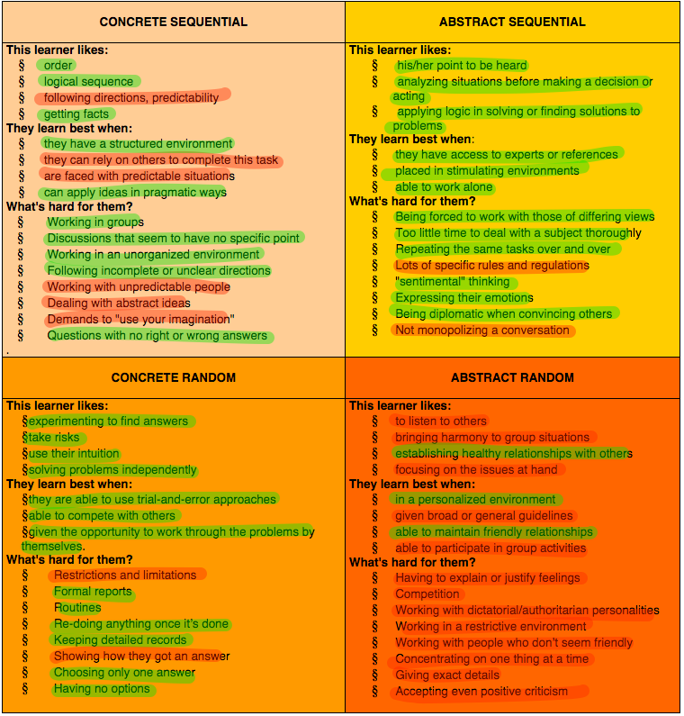

Learning Styles
Thursday, August 21, 2014
After taking this personal thinking style quiz, I learned that my Gregorc Thinking Style is:
- 28% Concrete Sequential
- 40% Abstract Sequential
- 36% Concrete Random
- 16% Abstract Random
That's a pretty wide spread. Does that mean I'm well rounded?
I didn't know what to make of that until I read the following summary of each thinking style. Below, I highlighted in green the traits that resonated with me and in red the ones that didn't. I think the fraction of green in each box is consistent with the scores I received in each "style":
Image courtesy web.cortland.edu/andersmd/learning/gregorc.htm
I notice that I agree I'm reticent to work with people who have differing views (but I do like to compete with them!) and that I enjoy getting alone-time when I can experiment and commit concepts to memory. What I think this means for me at DevBootcamp is that I should enjoy the stimulating (and competitive?) environment working with peers, but also make sure to budget time to work alone so that I get to experiment and understand concepts fully.
Two of the biggest struggles so far in Phase 0 for me have been (1) remaining organized (keeping detailed records) with the myriad tasks we're asked to do each week and (2) working with peers in pairing sessions -- not being able to simply work alone. Understanding my learning style better, I think I understand the incubus of my problems: (1) as a Concrete Random thinker I eschew keeping detailed records and (2) as a Abstract Sequential thinker I really savor being able to work alone and it's difficult to diplomatically convince others of solutions in pairing sessions.
Here's my plan of action: (1) I'm going to be proactive in organizing my work & budgeting time. I'll try to start projects as early as possible so that I don't feel overwhelmed or stressed out as 'deadlines' approach. (2) I'm going to force myself to volunteer for pairing sessions without reservation so that I can increase my EQ (emotional quotient) to the extent that pairing won't be as annoying to me. I know I'd definitely like to increase my diplomatic / empathetic abilities!
Now, I'll consider the idea of growth vs fixed mindset (see more). Sadly, I know that up until now I've displayed some of the qualities of a person with a fixed mindset: I've felt criticism is something I'd like to avoid (I sought only praise). I also sometimes got depressed to think about the comparitive success of others instead of feeling envigorated and curious to learn from their success.
I want to adopt more of a growth mindset, and I plan to do so by first acknowledging these shortcomings, establishing my intent to change them, and making incremental behavioral adjustments to achieve that change. With regards to accepting criticism -- my incremental adjustment is to solicit feedback more frequently (with DBC feedback and in person at the end of pairing sessions, etc). This will give me more opportunites to try reducing feelings of defensiveness and concentrating on integrating this constructive feedback into my approaches. My incremental approach to appreciate success of other is to recognize that life isn't a competition between me and that successful person: it's a process where we try to get the most out of ourselves and that we should appreciate lessons from others who have excelled in that. I think taking a deep breath and framing the idea in this light will help me focus on the bigger picture and be a growth-minded individual.